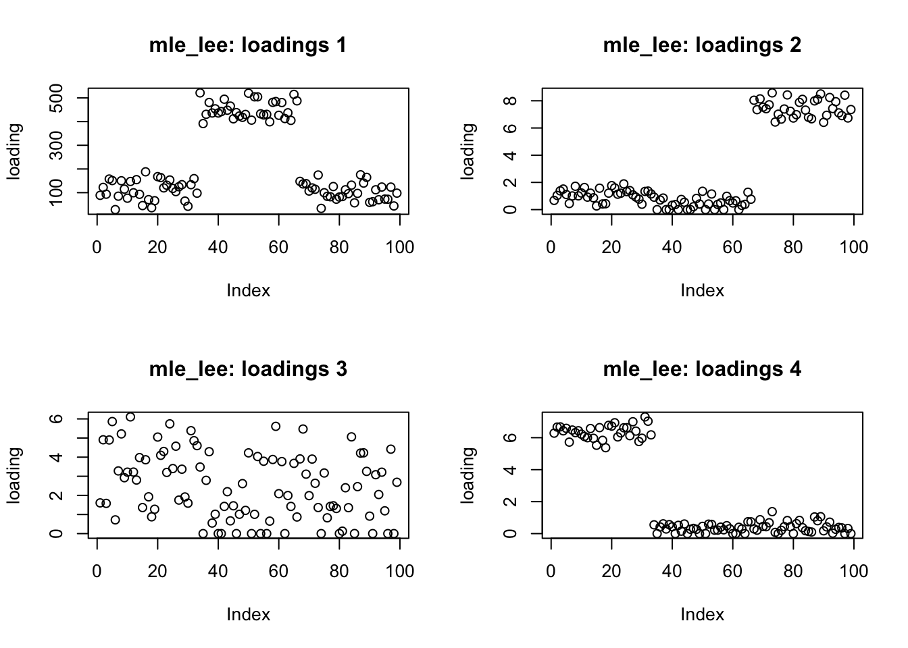
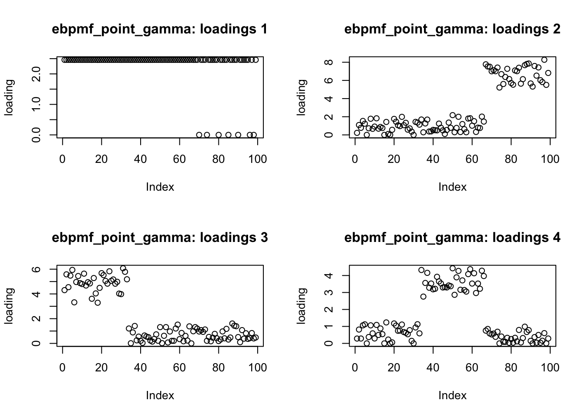
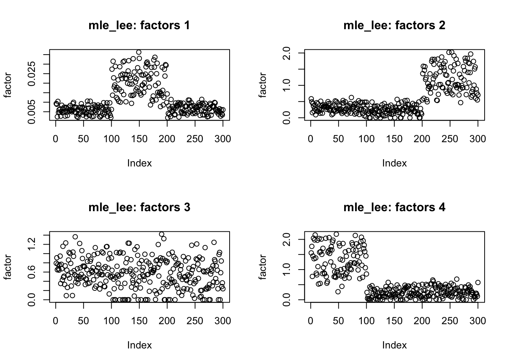
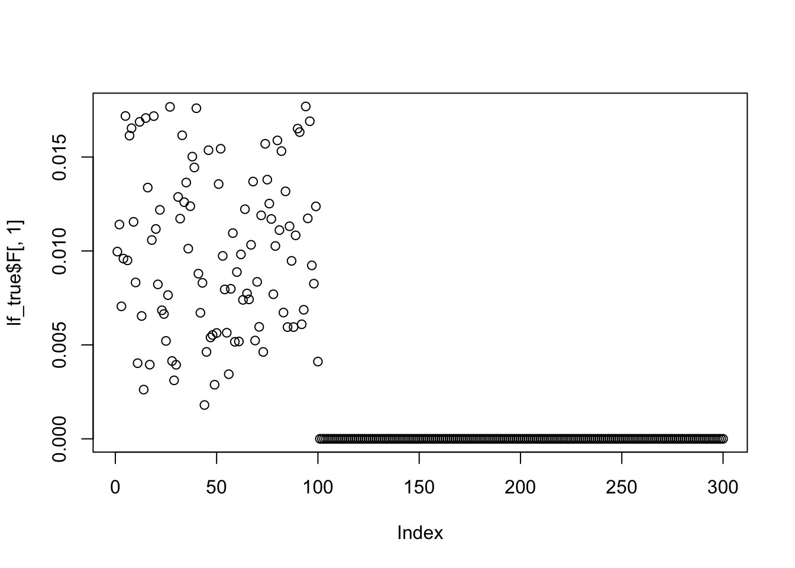
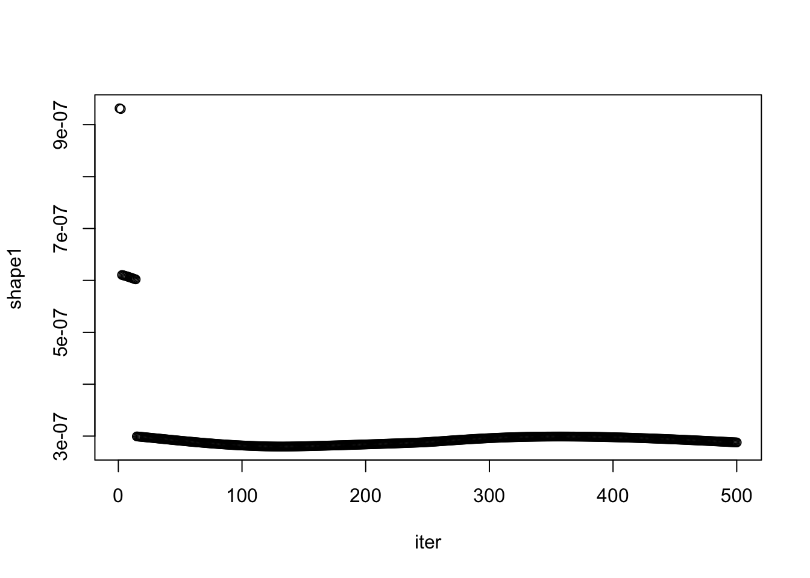

nmf_sparse10
zihao12
2019-11-08
Last updated: 2019-11-13
Checks: 6 1
Knit directory: ebpmf_demo/
This reproducible R Markdown analysis was created with workflowr (version 1.5.0). The Checks tab describes the reproducibility checks that were applied when the results were created. The Past versions tab lists the development history.
Great! Since the R Markdown file has been committed to the Git repository, you know the exact version of the code that produced these results.
Great job! The global environment was empty. Objects defined in the global environment can affect the analysis in your R Markdown file in unknown ways. For reproduciblity it’s best to always run the code in an empty environment.
The command set.seed(20190923) was run prior to running the code in the R Markdown file. Setting a seed ensures that any results that rely on randomness, e.g. subsampling or permutations, are reproducible.
Great job! Recording the operating system, R version, and package versions is critical for reproducibility.
- unnamed-chunk-3
- unnamed-chunk-4
To ensure reproducibility of the results, delete the cache directory nmf_sparse10_cache and re-run the analysis. To have workflowr automatically delete the cache directory prior to building the file, set delete_cache = TRUE when running wflow_build() or wflow_publish().
Great job! Using relative paths to the files within your workflowr project makes it easier to run your code on other machines.
Great! You are using Git for version control. Tracking code development and connecting the code version to the results is critical for reproducibility. The version displayed above was the version of the Git repository at the time these results were generated.
Note that you need to be careful to ensure that all relevant files for the analysis have been committed to Git prior to generating the results (you can use wflow_publish or wflow_git_commit). workflowr only checks the R Markdown file, but you know if there are other scripts or data files that it depends on. Below is the status of the Git repository when the results were generated:
Ignored files:
Ignored: .Rhistory
Ignored: .Rproj.user/
Ignored: analysis/nmf_sparse10_cache/
Ignored: analysis/nmf_sparse8_cache/
Ignored: analysis/nmf_sparse9_cache/
Untracked files:
Untracked: Rplot.png
Untracked: Untitled.Rmd
Untracked: Untitled.html
Untracked: analysis/.ipynb_checkpoints/
Untracked: analysis/Experiment_ebpmf_simple.Rmd
Untracked: analysis/demo_ebpmf_beta_gamma.Rmd
Untracked: analysis/draft.Rmd
Untracked: analysis/ebpm_gamma_mixture_experiment.Rmd
Untracked: analysis/ebpmf_demo.Rmd
Untracked: analysis/ebpmf_rank1_demo2.Rmd
Untracked: analysis/plot_g.Rmd
Untracked: analysis/softmax_experiments.ipynb
Untracked: cache/
Untracked: data/nmf_sparse8_fit_ebpmf_gm_mle.Rds
Untracked: data/nmf_sparse8_fit_ebpmf_gm_mlem.Rds
Untracked: figure/
Untracked: verbose_log_1571583163.21966.txt
Untracked: verbose_log_1571583324.71036.txt
Untracked: verbose_log_1571583741.94199.txt
Untracked: verbose_log_1571588102.40356.txt
Unstaged changes:
Modified: .gitignore
Modified: analysis/Compare_ebpmf_nmf.Rmd
Modified: analysis/Compare_ebvaepm_ebpm.Rmd
Modified: analysis/Experiment_ebpmf_rank1.Rmd
Modified: analysis/ebpm_demo.Rmd
Modified: analysis/nmf_sparse.Rmd
Modified: analysis/nmf_sparse2.Rmd
Modified: analysis/nmf_sparse3.Rmd
Modified: analysis/nmf_sparse6.Rmd
Modified: analysis/nmf_sparse7.Rmd
Modified: analysis/nmf_sparse8.Rmd
Modified: analysis/nmf_sparse9.Rmd
Modified: analysis/softmax_experiments.Rmd
Modified: analysis/test_ebpm_gamma_mixture_single_scale.Rmd
Modified: data/nmf_sparse8_fit_ebpmf_gm.Rds
Note that any generated files, e.g. HTML, png, CSS, etc., are not included in this status report because it is ok for generated content to have uncommitted changes.
These are the previous versions of the R Markdown and HTML files. If you’ve configured a remote Git repository (see ?wflow_git_remote), click on the hyperlinks in the table below to view them.
| File | Version | Author | Date | Message |
|---|---|---|---|---|
| Rmd | 9cc78f4 | zihao12 | 2019-11-14 | nmf_sparse10 more |
| html | e29ed92 | zihao12 | 2019-11-13 | Build site. |
| Rmd | 3186973 | zihao12 | 2019-11-13 | nmf_sparse10 |
| html | 918e842 | zihao12 | 2019-11-13 | Build site. |
| Rmd | 8717c30 | zihao12 | 2019-11-13 | nmf_sparse10 |
rm(list = ls())
library(knitr)
opts_knit$set(global.par = FALSE)
knitr::opts_chunk$set(autodep = TRUE)
devtools::load_all("../ebpm")Loading ebpmdevtools::load_all("../ebpmf.alpha")Loading ebpmf.alpha#library(ebpm)
#library(ebpmf.alpha)
library(NNLM)
library(ggplot2)
source("code/misc.R")
log_lik <- function(X, lam){
return(sum(dpois(x = X, lambda = lam , log = T)))
}
show_lf <- function(lf){
k = ncol(lf$L)
par(mfrow=c(2,k))
for(i in 1:k){
plot(lf$L[,i], ylab = sprintf("loadings %d", i))
}
for(i in 1:k){
plot(lf$F[,i], ylab = sprintf("factors %d", i))
}
}
compare_lf <- function(lf1, lf2, x_name, y_name){
k = ncol(lf1$L)
par(mfrow=c(2,k))
for(i in 1:k){
plot(lf1$L[,i], lf2$L[,i], main = sprintf("loading %d", i), xlab = x_name, ylab = y_name)
}
for(i in 1:k){
plot(lf1$F[,i], lf2$F[,i], main = sprintf("factor %d", i), xlab = x_name, ylab = y_name)
}
}
plot_prior_gamma_mix <- function(g, title = "main"){
## choose range of g
d = length(g$pi)
sub_mask = g$pi > 0.2/d
x_max = 5*max(g$shape[sub_mask]*g$scale[sub_mask])
x = seq(0,x_max,0.01)
y = lapply(x, FUN = pdf_gamma_mix, g = g)
plot(x, y, type = "l", xlab = "x", ylab = "pdf", main = title)
}
pdf_gamma_mix <- function(x, g){
return(sum(g$pi * dgamma(x, shape = g$shape, scale = g$scale)))
}Data
Simulate data and visualize its structure.
set.seed(123)
n = 100
p = 200
k = 2
L = matrix(0, nrow = n, ncol = k)
F = matrix(0, nrow = p, ncol = k)
## generate F in the simplex space
## first topic is has key words in 1:p/2
F[1:(p/2),1] = 20*runif(p/2)
F[(1+p/2):p,1] = 1*runif(p/2)
F[,1] = F[,1]/sum(F[,1])
## second topic is noise
F[,2] = runif(p)
F[,2] = F[,2]/sum(F[,2])
## first loading is mainly loaded onb the first topic
L[1:(n/2),1] = 3 + runif(n/2)
## second topic is noise
L[,2] = 10*runif(n)
L = diag(replicate(n, 100)) %*% L
lambda = L %*% t(F)
X = matrix(rpois(n*p, lambda = lambda), nrow = n)
image(t(X))
| Version | Author | Date |
|---|---|---|
| e29ed92 | zihao12 | 2019-11-13 |
Fitting models
## random initialization
L0 = matrix(runif(n*k), ncol = k)
F0 = matrix(runif(p*k), ncol = k)
## MLE
fit_em = NNLM::nnmf(A = X, k = k,loss = "mkl", method = "lee", max.iter = 10000,
init = list(W = L0, H = t(F0)))
## ebpmf_gm from random
qg_random = ebpmf.alpha::initialize_qg_from_LF(L0 = L0, F0 = F0)
fit_ebpmf_gm = ebpmf.alpha::ebpmf_gamma_mixture(X = X,K = k,qg = qg_random, maxiter.out = 1000, verbose = FALSE,scale_l = "max", scale_f = "max")
## ebpmf_gm from mle estimate
qg_mle = initialize_qg_from_LF(L0 = fit_em$W, F0 = t(fit_em$H))
fit_ebpmf_gm_mle = ebpmf.alpha:: ebpmf_gamma_mixture(X = X,K = k,qg = qg_mle, maxiter.out = 1000, scale_l = "max", scale_f = "max",verbose = FALSE)Below I also record the the \(E_z\) during computation
iter = 1
n_iter = 1000
l_1 = matrix(0, nrow = n, ncol = n_iter)
l_log_1 = matrix(0, nrow = n, ncol = n_iter)
x_l = matrix(0, nrow = n, ncol = n_iter)
s_l = replicate(n_iter, 0)
x_f = matrix(0, nrow = p, ncol = n_iter)
s_f = replicate(n_iter, 0)
Ez_sum = replicate(n_iter, 0)
qg_ = qg_random
for(i in 1:n_iter){
fit_ = ebpmf_gamma_mixture(X = X, K = 2, qg = qg_, scale_l = "max", scale_f = "max", maxiter.out = 1,verbose = FALSE)
qg_ = fit_$qg
l_1[,i] = qg_$qls_mean[,1]
l_log_1[,i] = qg_$qls_mean_log[,1]
x_l[,i] = rowSums(get_Ez(X, qg_, K = 2)$Ez[,,1])
s_l[i] = sum(qg_$qfs_mean[,1])
x_f[,i] = colSums(get_Ez(X, qg_, K = 2)$Ez[,,1])
s_f[i] = sum(qg_$qls_mean[,1])
Ez_sum[i] = sum(get_Ez(X, qg_, K = 2)$Ez[,,1])
}Transform the result to multinomial model
lf_truth = poisson2multinom(F = F, L = L)
lf_mle = poisson2multinom(F = t(fit_em$H), L = fit_em$W)
lf_gm_random = poisson2multinom(F = fit_ebpmf_gm$qg$qfs_mean, L = fit_ebpmf_gm$qg$qls_mean)
lf_gm_mle = poisson2multinom(F = fit_ebpmf_gm_mle$qg$qfs_mean, L = fit_ebpmf_gm_mle$qg$qls_mean)Check if estimates are similar to truth
show_lf(lf = lf_truth)
| Version | Author | Date |
|---|---|---|
| 918e842 | zihao12 | 2019-11-13 |
show_lf(lf = lf_mle)
| Version | Author | Date |
|---|---|---|
| 918e842 | zihao12 | 2019-11-13 |
show_lf(lf = lf_gm_random)
| Version | Author | Date |
|---|---|---|
| 918e842 | zihao12 | 2019-11-13 |
show_lf(lf = lf_gm_mle)
| Version | Author | Date |
|---|---|---|
| 918e842 | zihao12 | 2019-11-13 |
They are indeed similar to truth.
Compare ELBOs
check ELBO for fit_ebpmf_gm
plot(fit_ebpmf_gm$ELBO)
| Version | Author | Date |
|---|---|---|
| 918e842 | zihao12 | 2019-11-13 |
# plot(fit_ebpmf_gm$ELBO[400:500])
# plot(fit_ebpmf_gm$ELBO[500:600])
# plot(fit_ebpmf_gm$ELBO[700:800])If we take a closer look, we can see it does not increase monotonically, and that it reaches peak in 500 iterations.
check ELBO for fit_ebpmf_mle
plot(fit_ebpmf_gm_mle$ELBO)
| Version | Author | Date |
|---|---|---|
| 918e842 | zihao12 | 2019-11-13 |
# plot(fit_ebpmf_gm_mle$ELBO[400:500])
# plot(fit_ebpmf_gm_mle$ELBO[500:600])
# plot(fit_ebpmf_gm_mle$ELBO[700:800])It is disturbing that it seems to be jumping between two different ELBO values
df_ = data.frame(niter = 1:1000, random_init = fit_ebpmf_gm$ELBO, mle_init = fit_ebpmf_gm_mle$ELBO)
ggplot(df_) +
geom_point(aes(x = niter, y = random_init, color = "random_init"))+
geom_point(aes(x = niter, y = mle_init, color = "mle_init"))
| Version | Author | Date |
|---|---|---|
| 918e842 | zihao12 | 2019-11-13 |
print(sprintf("max elbo for mle init: %f", max(fit_ebpmf_gm_mle$ELBO)))[1] "max elbo for mle init: 34718.588190"print(sprintf("max elbo for random init: %f", max(fit_ebpmf_gm$ELBO)))[1] "max elbo for random init: 34658.234187"Compare divergence from truth
KL <- function(true,est){
sum(ifelse(true==0,0,true * log(true/est)) + est - true)
}
JS <- function(true,est){
0.5*(KL(true, est) + KL(est, true))
}
RMSE <- function(true, est){
sqrt(mean((true - est)^2))
}
compute_ll <- function(data, lam){
return(sum(dpois(x = data, lambda = lam, log = T)))
}
lam_true = L %*% t(F)
lam_mle = fit_em$W %*% fit_em$H
lam_gm_random = fit_ebpmf_gm$qg$qls_mean %*% t(fit_ebpmf_gm$qg$qfs_mean)
lam_gm_mle = fit_ebpmf_gm_mle$qg$qls_mean %*% t(fit_ebpmf_gm_mle$qg$qfs_mean)
KLs = c(KL(lam_true, lam_true), KL(lam_true, lam_mle), KL(lam_true, lam_gm_random), KL(lam_true, lam_gm_mle))
JSs = c(JS(lam_true, lam_true), JS(lam_true, lam_mle), JS(lam_true, lam_gm_random), JS(lam_true, lam_gm_mle))
RMSEs = c(RMSE(lam_true, lam_true), RMSE(lam_true, lam_mle), RMSE(lam_true, lam_gm_random), RMSE(lam_true, lam_gm_mle))
lls = c(compute_ll(X, lam_true), compute_ll(X, lam_mle), compute_ll(X, lam_gm_random), compute_ll(X, lam_gm_mle))
data.frame(KL = KLs, JS = JSs, RMSE = RMSEs, ll = lls, row.names = c("truth", "mle", "gm_random", "gm_mle")) KL JS RMSE ll
truth 0.0000 0.0000 0.0000000 -33920.18
mle 541.2971 439.2936 0.3350591 -33610.41
gm_random 349.3821 351.9056 0.3418438 -33652.57
gm_mle 408.8780 370.8130 0.3320797 -33619.73Note that there are places where measure of divergence doesn’t agree with each other.
Look at shrinkage towards 0
We can see that we need to shrink small values in loading 1 from plots above. Let’s compare the shrinkage effect.
loading_one = data.frame(idx = 1:n,truth = L[,1], mle = fit_em$W[,1], gm_random = fit_ebpmf_gm$qg$qls_mean[,1], gm_mle = fit_ebpmf_gm_mle$qg$qls_mean[,1])
idx_show = 51:100
loading_one_ = loading_one[idx_show, ]
ggplot(loading_one_)+
geom_point(aes(x = idx, y = truth, color = "truth"))+
geom_point(aes(x = idx, y = mle, color = "mle"))+
geom_point(aes(x = idx, y = gm_random, color = "gm_random"))+
geom_point(aes(x = idx, y = gm_mle, color = "gm_mle"))
| Version | Author | Date |
|---|---|---|
| 918e842 | zihao12 | 2019-11-13 |
There might be problem with scale. So let’s see teh result in multinomial model
loading_one_m = data.frame(idx = 1:n,truth = lf_truth$L[,1], mle = lf_mle$L[,1], gm_random = lf_gm_random$L[,1], gm_mle = lf_gm_mle$L[,1])
idx_show = 1:100
loading_one_m_ = loading_one_m[idx_show, ]
ggplot(loading_one_m_)+
geom_point(aes(x = idx, y = truth, color = "truth"))+
geom_point(aes(x = idx, y = mle, color = "mle"))+
geom_point(aes(x = idx, y = gm_random, color = "gm_random"))+
geom_point(aes(x = idx, y = gm_mle, color = "gm_mle"))
| Version | Author | Date |
|---|---|---|
| 918e842 | zihao12 | 2019-11-13 |
## only look at 0 loading
idx_show = 51:100
loading_one_m_ = loading_one_m[idx_show, ]
ggplot(loading_one_m_)+
geom_point(aes(x = idx, y = truth, color = "truth"))+
geom_point(aes(x = idx, y = mle, color = "mle"))+
geom_point(aes(x = idx, y = gm_random, color = "gm_random"))+
geom_point(aes(x = idx, y = gm_mle, color = "gm_mle"))
| Version | Author | Date |
|---|---|---|
| 918e842 | zihao12 | 2019-11-13 |
how do we have sparsity
I got fit_ by running 1000 iterations of ebpm_gm using random initialization. I record the changes of rowSums of \(Ez[,,1]\).
## the fitted value for "should-be-0" part of the loading 1
plot(fit_$qg$qls_mean[1:100,1])
| Version | Author | Date |
|---|---|---|
| 918e842 | zihao12 | 2019-11-13 |
plot(fit_$qg$qls_mean[51:100,1])
| Version | Author | Date |
|---|---|---|
| 918e842 | zihao12 | 2019-11-13 |
## I find the max and min value of loading 1 from 51 to 100 (truth are 0); beside I choose one loading whose truth is not 0, as comparison
large_idx = 21
max_idx = which.max(fit_$qg$qls_mean[51:100,1]) + 50
min_idx = which.min(fit_$qg$qls_mean[51:100,1]) + 50
print(fit_$qg$qls_mean[c(max_idx,min_idx),1])[1] 1.292706e-02 5.790142e-06## see how they change
plot(l_1[large_idx,])
| Version | Author | Date |
|---|---|---|
| 918e842 | zihao12 | 2019-11-13 |
plot(l_1[max_idx,])
| Version | Author | Date |
|---|---|---|
| 918e842 | zihao12 | 2019-11-13 |
plot(l_1[min_idx,])
| Version | Author | Date |
|---|---|---|
| 918e842 | zihao12 | 2019-11-13 |
## take a closer look
plot(l_1[large_idx,900:1000])
| Version | Author | Date |
|---|---|---|
| 918e842 | zihao12 | 2019-11-13 |
# plot(l_1[min_idx,200:300])
# plot(l_1[min_idx,300:400])
# plot(l_1[min_idx,400:500])
plot(l_1[min_idx,900:1000])
| Version | Author | Date |
|---|---|---|
| 918e842 | zihao12 | 2019-11-13 |
# plot(l_1[max_idx,200:300])
# plot(l_1[max_idx,300:400])
# plot(l_1[max_idx,400:500])
plot(l_1[max_idx,900:1000])
| Version | Author | Date |
|---|---|---|
| 918e842 | zihao12 | 2019-11-13 |
## see how the `x` change for their `ebpm(x, s)` problem
par(mfrow=c(1,1))
plot(x_l[large_idx,])
plot(x_l[max_idx,])
plot(x_l[min_idx,])
plot(x_l[min_idx,300:400])
## plot `s` in `ebpm(x, s)` problem
plot(s_l)
Look at posterior mean/MLE
idx_ = 1:1000
plot(l_1[large_idx,idx_]/(x_l[large_idx,idx_]/s_l[idx_]), ylab = "posterior mean/MLE")
plot(l_1[max_idx,idx_]/(x_l[max_idx,idx_]/s_l[idx_]), ylab = "posterior mean/MLE")
#plot(l_1[min_idx,]/(x_l[min_idx,]*s_l), ylab = "posterior mean/MLE") ## MLE is 0 after a few iterationsidx = 51
plot(exp(l_log_1[idx,idx_])/(x_l[idx,idx_]/s_l[idx_]), ylab = "exp(posterior mean log)/MLE")
So, in each ebpm we don’t shrink smaller values to 0. Let’s see how it acts on exp(E(log(l))):
plot(exp(l_log_1[large_idx,idx_])/(x_l[large_idx,idx_]/s_l[idx_]), ylab = "exp(posterior mean log)/MLE")
print((exp(l_log_1[large_idx,idx_])/(x_l[large_idx,idx_]/s_l[idx_]))[990:1000]) [1] 0.9987514 0.9987514 0.9987512 0.9987512 0.9987512 0.9987515 0.9987515
[8] 0.9987516 0.9987518 0.9987518 0.9987521plot(exp(l_log_1[max_idx,idx_])/(x_l[max_idx,idx_]/s_l[idx_]), ylab = "exp(posterior mean log)/MLE")
print((exp(l_log_1[max_idx,idx_])/(x_l[max_idx,idx_]/s_l[idx_]))[990:1000]) [1] 1.005179 1.005204 1.004986 1.005319 1.005072 1.005315 1.005366
[8] 1.005153 1.005369 1.005034 1.005266## x/s becomes 0 afterwards
plot(exp(l_log_1[min_idx,idx_])/(x_l[min_idx,idx_]/s_l[idx_]), ylab = "exp(posterior mean log)/MLE") It seems to be shrinking those large values (which is not 0 in truth), while increasing those small nonzero values (which is 0 in truth). Look at the specific
It seems to be shrinking those large values (which is not 0 in truth), while increasing those small nonzero values (which is 0 in truth). Look at the specific ebpm problem it is solving.
The ebpm problem after 1000 iterations
plot(x_l[,1000])
print(s_l[1000])[1] 2806.265fit_l = ebpm_gamma_mixture_single_scale(x = x_l[,1000], s = s_l[1000])
top_idx = sort(fit_l$fitted_g$pi, index.return = TRUE, decreasing = TRUE)$ix[1:3]
## biggest proportions
fit_l$fitted_g$pi[top_idx][1] 0.66707384 0.30235532 0.03057084## shapes for the biggest proportions
fit_l$fitted_g$shape[top_idx][1] 0.7767711845 0.0000948207 0.3883855922## scales for the biggest proportions
fit_l$fitted_g$scale[top_idx][1] 0.1879049 0.1879049 0.1879049## look at the proportions of 0s
print(sum(x_l[,1000] == 0)/n)[1] 0.31## look at the proportions of nozero (nonzero in true L as well)
print(sum(x_l[,1000] > 100)/n)[1] 0.5## look at the proportions of zeros (zero in true L)
print(sum(x_l[,1000] > 0 & x_l[,1000] < 100)/n)[1] 0.19So basically is one very small shape (0.3 weight), and two larger shapes (they are neighboring grids) for the rest of the weight
Let’s look at the posterior proportion Pi_tilde:
## let's further look at the posterior proportion:
L = compute_L(x = x_l[,1000], s = replicate(n, s_l[1000]), a = fit_l$fitted_g$shape, b = 1/fit_l$fitted_g$scale)$L
Pi_tilde = t(t(L) * fit_l$fitted_g$pi)
Pi_tilde = Pi_tilde/rowSums(Pi_tilde)
## nonzero (truth is not 0): puts weights on big shapes
plot(Pi_tilde[large_idx,])
## nonzero (truth is 0): puts weights on two big shapes
plot(Pi_tilde[max_idx,])
## zero (truth is 0) : puts weights on teh smallest shape
plot(Pi_tilde[min_idx,]) It seems that
It seems that ebpm sees 2 main clusters: zero and nonzero. Within nonzero values, the posterior proportions are all on large components with large shapes. Therefore, we can expect that the nonzero values will be shrunk to their mean, thus explaining why the bigger values are smaller and smaller nonzero values get bigger.
show g
fit_ebpmf_gm$qg$gls[[1]]
$pi
[1] 3.023494e-01 2.270285e-12 2.275651e-12 2.286376e-12 2.307798e-12
[6] 2.350530e-12 2.435588e-12 2.604386e-12 2.938818e-12 3.608356e-12
[11] 5.015286e-12 8.250196e-12 3.065952e-02 6.669910e-01 1.945279e-11
[16] 1.381111e-13
$shape
[1] 9.482518e-05 1.896504e-04 3.793007e-04 7.586014e-04 1.517203e-03
[6] 3.034406e-03 6.068812e-03 1.213762e-02 2.427525e-02 4.855049e-02
[11] 9.710098e-02 1.942020e-01 3.884039e-01 7.768079e-01 1.553616e+00
[16] 3.107232e+00
$scale
[1] 0.1878961 0.1878961 0.1878961 0.1878961 0.1878961 0.1878961 0.1878961
[8] 0.1878961 0.1878961 0.1878961 0.1878961 0.1878961 0.1878961 0.1878961
[15] 0.1878961 0.1878961
attr(,"class")
[1] "gammamix"
attr(,"row.names")
[1] 1 2 3 4 5 6 7 8 9 10 11 12 13 14 15 16
[[2]]
$pi
[1] 8.666030e-02 2.332492e-13 2.351278e-13 2.388836e-13 2.463904e-13
[6] 2.613852e-13 2.913069e-13 3.509342e-13 4.697481e-13 7.087147e-13
[11] 1.213358e-12 2.466263e-12 6.733782e-12 2.368135e-11 9.133397e-01
[16] 1.269111e-11 1.170372e-14
$shape
[1] 4.945598e-05 9.891197e-05 1.978239e-04 3.956479e-04 7.912957e-04
[6] 1.582591e-03 3.165183e-03 6.330366e-03 1.266073e-02 2.532146e-02
[11] 5.064293e-02 1.012859e-01 2.025717e-01 4.051434e-01 8.102868e-01
[16] 1.620574e+00 3.241147e+00
$scale
[1] 0.5790947 0.5790947 0.5790947 0.5790947 0.5790947 0.5790947 0.5790947
[8] 0.5790947 0.5790947 0.5790947 0.5790947 0.5790947 0.5790947 0.5790947
[15] 0.5790947 0.5790947 0.5790947
attr(,"class")
[1] "gammamix"
attr(,"row.names")
[1] 1 2 3 4 5 6 7 8 9 10 11 12 13 14 15 16 17fit_ebpmf_gm_mle$qg$gls[[1]]
$pi
[1] 3.164527e-01 2.582547e-12 2.588061e-12 2.599081e-12 2.621086e-12
[6] 2.664962e-12 2.752238e-12 2.925320e-12 3.268607e-12 3.961853e-12
[11] 5.457162e-12 9.025584e-12 2.111114e-01 4.724359e-01 1.106660e-11
[16] 5.334595e-15
$shape
[1] 0.0001145851 0.0002291703 0.0004583405 0.0009166811 0.0018333622
[6] 0.0036667243 0.0073334487 0.0146668974 0.0293337947 0.0586675895
[11] 0.1173351789 0.2346703578 0.4693407157 0.9386814313 1.8773628627
[16] 3.7547257254
$scale
[1] 2.738312 2.738312 2.738312 2.738312 2.738312 2.738312 2.738312
[8] 2.738312 2.738312 2.738312 2.738312 2.738312 2.738312 2.738312
[15] 2.738312 2.738312
attr(,"class")
[1] "gammamix"
attr(,"row.names")
[1] 1 2 3 4 5 6 7 8 9 10 11 12 13 14 15 16
[[2]]
$pi
[1] 1.639017e-02 2.461337e-21 2.573023e-21 2.798882e-21 3.260602e-21
[6] 4.224476e-21 6.317416e-21 1.119203e-20 2.392540e-20 6.324456e-20
[11] 2.137132e-19 9.423416e-19 5.091482e-18 2.486331e-17 9.836098e-01
[16] 1.425576e-17 1.576870e-20
$shape
[1] 4.945598e-05 9.891197e-05 1.978239e-04 3.956479e-04 7.912957e-04
[6] 1.582591e-03 3.165183e-03 6.330366e-03 1.266073e-02 2.532146e-02
[11] 5.064293e-02 1.012859e-01 2.025717e-01 4.051434e-01 8.102868e-01
[16] 1.620574e+00 3.241147e+00
$scale
[1] 3.326047 3.326047 3.326047 3.326047 3.326047 3.326047 3.326047
[8] 3.326047 3.326047 3.326047 3.326047 3.326047 3.326047 3.326047
[15] 3.326047 3.326047 3.326047
attr(,"class")
[1] "gammamix"
attr(,"row.names")
[1] 1 2 3 4 5 6 7 8 9 10 11 12 13 14 15 16 17
sessionInfo()R version 3.5.1 (2018-07-02)
Platform: x86_64-apple-darwin15.6.0 (64-bit)
Running under: macOS 10.14
Matrix products: default
BLAS: /Library/Frameworks/R.framework/Versions/3.5/Resources/lib/libRblas.0.dylib
LAPACK: /Library/Frameworks/R.framework/Versions/3.5/Resources/lib/libRlapack.dylib
locale:
[1] en_US.UTF-8/en_US.UTF-8/en_US.UTF-8/C/en_US.UTF-8/en_US.UTF-8
attached base packages:
[1] stats graphics grDevices utils datasets methods base
other attached packages:
[1] ggplot2_3.2.1 NNLM_0.4.2 ebpmf.alpha_0.1.2 ebpm_0.0.0.9004
[5] testthat_2.2.1 knitr_1.25
loaded via a namespace (and not attached):
[1] gtools_3.8.1 tidyselect_0.2.5 xfun_0.8
[4] remotes_2.1.0 purrr_0.3.2 colorspace_1.4-1
[7] usethis_1.5.1 htmltools_0.3.6 yaml_2.2.0
[10] rlang_0.4.1 pkgbuild_1.0.3 mixsqp_0.2-3
[13] later_0.8.0 pillar_1.4.2 glue_1.3.1
[16] withr_2.1.2 sessioninfo_1.1.1 stringr_1.4.0
[19] munsell_0.5.0 gtable_0.3.0 workflowr_1.5.0
[22] devtools_2.2.1.9000 memoise_1.1.0 evaluate_0.14
[25] labeling_0.3 callr_3.2.0 httpuv_1.5.1
[28] ps_1.3.0 Rcpp_1.0.2 promises_1.0.1
[31] backports_1.1.5 scales_1.0.0 desc_1.2.0
[34] pkgload_1.0.2 fs_1.3.1 digest_0.6.22
[37] stringi_1.4.3 processx_3.3.1 dplyr_0.8.1
[40] rprojroot_1.3-2 grid_3.5.1 cli_1.1.0
[43] tools_3.5.1 magrittr_1.5 lazyeval_0.2.2
[46] tibble_2.1.3 crayon_1.3.4 whisker_0.3-2
[49] pkgconfig_2.0.3 ellipsis_0.3.0 prettyunits_1.0.2
[52] assertthat_0.2.1 rmarkdown_1.13 rstudioapi_0.10
[55] R6_2.4.0 git2r_0.26.1 compiler_3.5.1